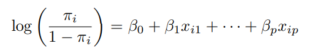
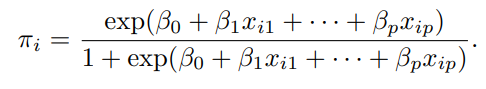

Modeling Categorical Data
Dr. Malima Atapattu
Department of Statistics & Computer Science
Categorical data play an important role in many statistical analyses.
A categorical variable can be seen as a variable for which the possible values form a set of categories, which can be finite or, in the case of count data, infinite.
These categories can be records of answers (yes/no) in a questionnaire, diagnoses like normal/abnormal resulting from a medical examination, or choices of brands in consumer behavior.
Data of this type are common in all sciences that use quantitative research tools, for example, social sciences, economics, biology, genetics, and medicine, but also engineering and agriculture.
In this lecture, we focus on the statistical modeling of binary response variables, for which the response outcome for each subject is a success or a failure, because binary data are the most common form of categorical data.
The most popular model for binary data is logistic regression.

where \(\pi_i\) denotes the probability of success.

Suppose that there is a single explanatory variable \(x_1\). Consider the model \(\pi = \dfrac{\exp(\beta_0 + \beta_1 x_1)}{1+\exp(\beta_0 + \beta_1 x_1)}\), which is equivalently expressed as \(logit(\pi) = \beta_0 + \beta_1 x_1\).
Suppose that \(\beta_0 =1\) and \(\beta_1 = 0.5\).
beta0 <- 1
beta1 <- (-0.5) # let's use a negative value for beta 1
curve ( expr = exp ( beta0 + beta1 * x ) / (1+ exp ( beta0 + beta1 * x ) ) , xlim
= c ( -15 , 15) , col = " black " , main = expression ( pi ==
frac ( e ^{1-0.5* x [1]} , 1+ e ^{1-0.5* x [1]}) ) , xlab =
expression ( x [1]) , ylab = expression ( pi ) )We can make the following generalizations from examining the model and these plots:
\(0 < \pi <1\)
When \(\beta_1 >0\), there is a positive relationship between \(x_1\) and \(\pi\). When \(\beta_1 < 0\), there is a negative relationship between \(x_1\) and \(\pi\).
The slope of the curve is dependent on the value of \(x_1\).
Above \(\pi = 0.5\) is a mirror image of below \(\pi = 0.5\).
Consider the Placekick.csv datafile in your google classroom. It contains 1,425 placekick observations collected during the 1995 NFL season.
Let’s use the variable good as the binary response variable denoting successful (1) vs. failed (0) placekicks and all others as the explanatory variables.
week distance change elap30 PAT type field wind good
1 1 21 1 24.7167 0 1 1 0 1
2 1 21 0 15.8500 0 1 1 0 1
3 1 20 0 0.4500 1 1 1 0 1
4 1 28 0 13.5500 0 1 1 0 1
5 1 20 0 21.8667 1 0 0 0 1
6 1 25 0 17.6833 0 0 0 0 1For now, we will use only the distance to estimate the probability of a successful placekick. Formally, \(Y\) is the response variable with a value of 1 for a success and 0 for a failure, and the explanatory variable \(x_1\) denotes the distance in yards for the placekick.
We will use the observed data to estimate the parameters in the model \(logit(\pi) = \beta_0 + \beta_1 x_1\).
glm() is used to fit logistic regression models in R.
Call:
glm(formula = good ~ distance, family = binomial, data = placekick)
Deviance Residuals:
Min 1Q Median 3Q Max
-2.7441 0.2425 0.2425 0.3801 1.6092
Coefficients:
Estimate Std. Error z value Pr(>|z|)
(Intercept) 5.812080 0.326277 17.81 <2e-16 ***
distance -0.115027 0.008339 -13.79 <2e-16 ***
---
Signif. codes: 0 '***' 0.001 '**' 0.01 '*' 0.05 '.' 0.1 ' ' 1
(Dispersion parameter for binomial family taken to be 1)
Null deviance: 1013.43 on 1424 degrees of freedom
Residual deviance: 775.75 on 1423 degrees of freedom
AIC: 779.75
Number of Fisher Scoring iterations: 6fit2 <- glm ( formula = good ~ change + distance , family = binomial, data = placekick )
fit2$coefficients #If you want to display only one component of the output.(Intercept) change distance
5.8931814 -0.4477832 -0.1128888 \(logit(\hat{\pi}) = 5.8931814 -0.4477832 (change) -0.1128888 (distance).\)
Call:
glm(formula = good ~ change + distance, family = binomial, data = placekick)
Deviance Residuals:
Min 1Q Median 3Q Max
-2.7061 0.2282 0.2282 0.3750 1.5649
Coefficients:
Estimate Std. Error z value Pr(>|z|)
(Intercept) 5.893181 0.333184 17.687 <2e-16 ***
change -0.447783 0.193673 -2.312 0.0208 *
distance -0.112889 0.008444 -13.370 <2e-16 ***
---
Signif. codes: 0 '***' 0.001 '**' 0.01 '*' 0.05 '.' 0.1 ' ' 1
(Dispersion parameter for binomial family taken to be 1)
Null deviance: 1013.4 on 1424 degrees of freedom
Residual deviance: 770.5 on 1422 degrees of freedom
AIC: 776.5
Number of Fisher Scoring iterations: 6predict() R function.The confint() function provides a convenient way to calculate confidence intervals associated with regression parameters.
This is a generic function that by default finds profile LR intervals for our setting. We use this function below to calculate the interval corresponding to the distance of the placekick:
2.5 % 97.5 %
(Intercept) 5.2646219 6.57307894
change -0.8253868 -0.06518603
distance -0.1298719 -0.09671700 2.5 % 97.5 %
(Intercept) 5.240153 6.54620948
change -0.827375 -0.06819141
distance -0.129438 -0.09633956[1] 0.9078129 0.9368932 715.5696518 0.8782079 0.4380655 193.3731712There are two competing goals in model selection.
Model should fit the data well.
Model should be simple to interpret (smooth rather than overfit - principle of parsimony).
# model with all the variables
fit_full <- glm ( formula = good ~ . , family = binomial , data = placekick )
summary(fit_full)
Call:
glm(formula = good ~ ., family = binomial, data = placekick)
Deviance Residuals:
Min 1Q Median 3Q Max
-3.0283 0.1614 0.1871 0.4722 1.4888
Coefficients:
Estimate Std. Error z value Pr(>|z|)
(Intercept) 4.781039 0.558442 8.561 < 2e-16 ***
week -0.024774 0.019528 -1.269 0.20456
distance -0.085899 0.011228 -7.650 2e-14 ***
change -0.349698 0.195358 -1.790 0.07345 .
elap30 0.004795 0.010552 0.454 0.64955
PAT 1.245801 0.385085 3.235 0.00122 **
type 0.309970 0.279175 1.110 0.26687
field -0.216276 0.254247 -0.851 0.39496
wind -0.630237 0.343864 -1.833 0.06683 .
---
Signif. codes: 0 '***' 0.001 '**' 0.01 '*' 0.05 '.' 0.1 ' ' 1
(Dispersion parameter for binomial family taken to be 1)
Null deviance: 1013.43 on 1424 degrees of freedom
Residual deviance: 753.52 on 1416 degrees of freedom
AIC: 771.52
Number of Fisher Scoring iterations: 6step() R function.Start: AIC=771.52
good ~ week + distance + change + elap30 + PAT + type + field +
wind
Df Deviance AIC
- elap30 1 753.72 769.72
- field 1 754.25 770.25
- type 1 754.76 770.76
- week 1 755.13 771.13
<none> 753.52 771.52
- change 1 756.69 772.69
- wind 1 756.74 772.74
- PAT 1 764.63 780.63
- distance 1 822.64 838.64
Step: AIC=769.72
good ~ week + distance + change + PAT + type + field + wind
Df Deviance AIC
- field 1 754.49 768.49
- type 1 755.04 769.04
- week 1 755.32 769.32
<none> 753.72 769.72
- change 1 756.78 770.78
- wind 1 756.96 770.96
- PAT 1 764.81 778.81
- distance 1 824.69 838.69
Step: AIC=768.49
good ~ week + distance + change + PAT + type + wind
Df Deviance AIC
- type 1 755.07 767.07
- week 1 756.06 768.06
<none> 754.49 768.49
- wind 1 757.06 769.06
- change 1 757.77 769.77
- PAT 1 765.38 777.38
- distance 1 825.52 837.52
Step: AIC=767.07
good ~ week + distance + change + PAT + wind
Df Deviance AIC
- week 1 756.69 766.69
<none> 755.07 767.07
- wind 1 757.26 767.26
- change 1 758.27 768.27
- PAT 1 765.85 775.85
- distance 1 827.69 837.69
Step: AIC=766.69
good ~ distance + change + PAT + wind
Df Deviance AIC
<none> 756.69 766.69
- wind 1 759.33 767.33
- change 1 759.66 767.66
- PAT 1 767.54 775.54
- distance 1 829.87 837.87
Call: glm(formula = good ~ distance + change + PAT + wind, family = binomial,
data = placekick)
Coefficients:
(Intercept) distance change PAT wind
4.75157 -0.08724 -0.33505 1.22992 -0.52344
Degrees of Freedom: 1424 Total (i.e. Null); 1420 Residual
Null Deviance: 1013
Residual Deviance: 756.7 AIC: 766.7\(logit(\pi) = 4.75157-0.08724 (distance)-0.33505(change)\)
\(+1.22992(PAT)-0.52344(wind)\)
So far we considered only the main effects of the variables. But, we can fit more complex models including interaction terms too.
The same model selection tools can be used to find the best fitted model for this case also.
fit_int <- glm ( formula = good ~ distance + change + PAT + wind + distance:wind , family = binomial , data = placekick )
summary(fit_int)
Call:
glm(formula = good ~ distance + change + PAT + wind + distance:wind,
family = binomial, data = placekick)
Deviance Residuals:
Min 1Q Median 3Q Max
-2.8839 0.1775 0.1775 0.4679 1.7098
Coefficients:
Estimate Std. Error z value Pr(>|z|)
(Intercept) 4.49835 0.48163 9.340 < 2e-16 ***
distance -0.08074 0.01143 -7.064 1.62e-12 ***
change -0.33056 0.19444 -1.700 0.08913 .
PAT 1.25916 0.38707 3.253 0.00114 **
wind 2.87783 1.78593 1.611 0.10709
distance:wind -0.09074 0.04569 -1.986 0.04701 *
---
Signif. codes: 0 '***' 0.001 '**' 0.01 '*' 0.05 '.' 0.1 ' ' 1
(Dispersion parameter for binomial family taken to be 1)
Null deviance: 1013.43 on 1424 degrees of freedom
Residual deviance: 751.27 on 1419 degrees of freedom
AIC: 763.27
Number of Fisher Scoring iterations: 6Start: AIC=763.27
good ~ distance + change + PAT + wind + distance:wind
Df Deviance AIC
<none> 751.27 763.27
- change 1 754.13 764.13
- distance:wind 1 756.69 766.69
- PAT 1 762.50 772.50
Call: glm(formula = good ~ distance + change + PAT + wind + distance:wind,
family = binomial, data = placekick)
Coefficients:
(Intercept) distance change PAT wind
4.49835 -0.08074 -0.33056 1.25916 2.87783
distance:wind
-0.09074
Degrees of Freedom: 1424 Total (i.e. Null); 1419 Residual
Null Deviance: 1013
Residual Deviance: 751.3 AIC: 763.3